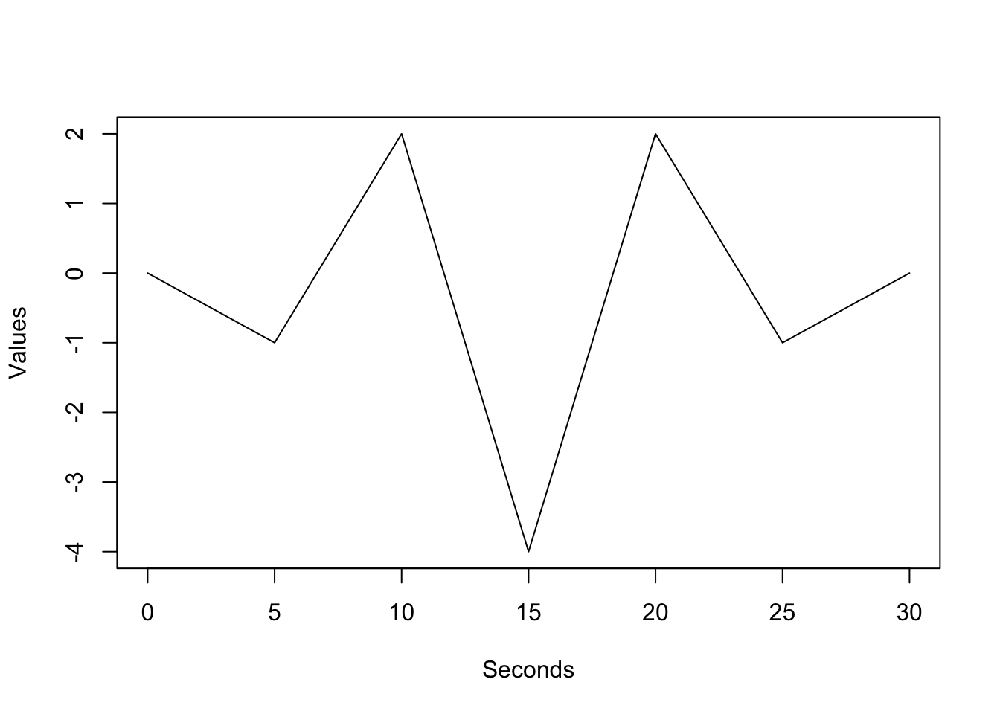
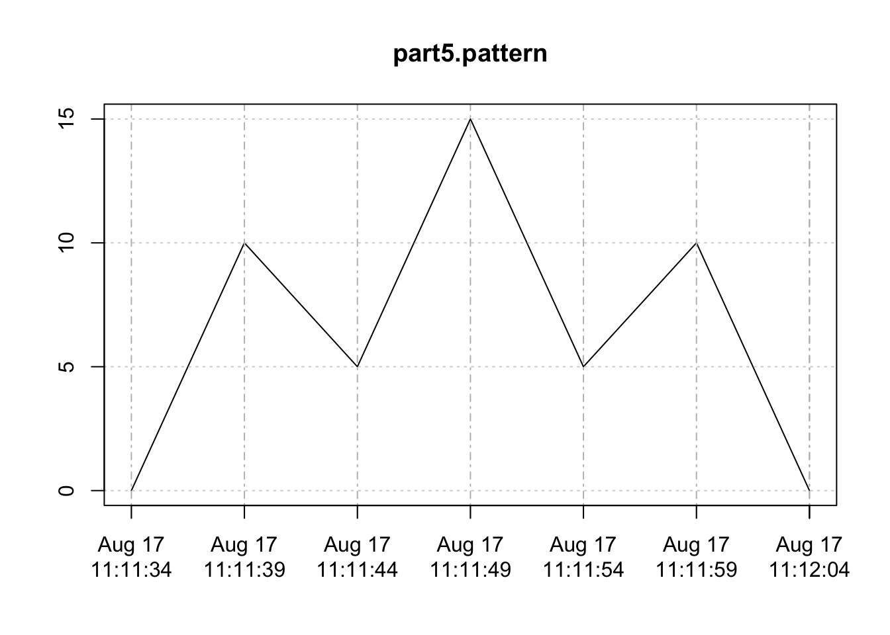

This page contains several exercises that may be used as a tutorial for the TSPatternQuery package. Should you wish to help by providing feedback, you may also participate in the user evaluation. Instructions for doing so are included in the next section.
The aim of this evaluation is to gain feedback on the TSPatternQuery package. It is important to involve users in the design of software packages so to ensure that software developed not only solves the problem, but is also usable. This evaluation is set up so that you may do it on your own. Simply follow the instructions given in this document and answer the questionnaire at the end. The exercises below will require you to download a package in RStudio and use it on time series data that will be provided. At the end of the exercises, you will be instructed to save and send me the contents of an .Rhistory file containing everything that you typed into the R console during this session. The only other data collected during this evaluation will be your answers to the questionnaire. If you have any questions, feel free to contact me via email at joshanthonymarsh (AT) gmail (DOT) com. The purpose of this evaluation is not to test your ability. Should you find a particular task difficult, please indicate so in the questionnaire (or by emailing me). This is likely an indicator that something is deficient in the software or its documentation, and is useful feedback. You are welcome to withdraw from the experiment at any time. At this point, please send me an email at joshanthonymarsh (AT) gmail (DOT) com stating that you agree to take part in this evaluation. An email including your name and the sentence “I agree to take part in the TSPatternQuery evaluation.” will suffice. I also encourage you to include any questions that you may have in this email. If you do include questions in your email, please wait for me to get back to you before you begin the evaluation.
Please note that I have avoid describing the TSPatternQuery tool in this evaluation page. Part of what is being evaluated is the documentation for the package. Please click the “Home” button at the top of this page to view the vignette for this package. You are encouraged to read as much of the vignette as you feel is necessary to understand and work with the TSPatternQuery package.
It is recommended that you use RStudio for the following exercises. If you do not already have RStudio installed, then you may download it from this link: Download RStudio. Alternatively, you may launch RStudio in a web browser using rollApp RStudio. The second option may result in slower package download and execution times.
Open a new session in RStudio. Please note that if you are taking part in the evaluation, you will be saving your R console session history to a new “evaluation.Rhistory” file at the end of these exercises.
Enter the following commands into the R console to install the TSPatternQuery package.
devtools::install_github("joshmarsh/TSPatternQuery")
library(TSPatternQuery)
library(xts)You may optionally add the build_vignettes=TRUE parameter to devtools::install_github("joshmarsh/TSPatternQuery"), however the vignette for TSPatternQuery may be more easily viewed by clicking the Home button at the top of this screen. You do not need to read the vignette in it’s entirety. It is there for you to reference if you get stuck at any point.
Copy-paste the following command into the R console to import a time series for this exercise.
ts.path.p2 <- system.file("extdata", "part2_ts.csv", package = "TSPatternQuery")
part2.ts <- xts(read.csv(ts.path.p2)[[2]],
order.by = as.POSIXct(read.csv(ts.path.p2)[[1]]))Using the CreateCustomTimeSeries function, please define a pattern template in order to find the following pattern. You may name it part2.pattern. Notice that the points of the pattern are spaced in 5 second intervals.

Once you have defined the pattern, use the Query function to find occurrences of the pattern in the timesiers that you imported. You may at first use the timeseries and pattern.template only. You will likely notice that the Query functions finds multiple matches. If you do not show any matches, there may be a problem with your pattern template.
Set the return.matched.patterns parameter to TRUE in order to return a list of the windows that have been matched. Plot these so that you can see how successful your query has been.
Next, try incrasing the spearmans.rho.threshold until you are satisfied that your query isn’t too permissive. You may then move on to the next section.
Copy-paste the following command into the R console to import a time series for this exercise.
ts.path.p3 <- system.file("extdata", "part3_ts.csv", package = "TSPatternQuery")
part3.ts <- xts(read.csv(ts.path.p3)[[2]],
order.by = as.POSIXct(read.csv(ts.path.p3)[[1]]))Run the following command in the R console to create a pattern template. This pattern is the same shape as the one that you used in part 2, however it is being provided to you this time to ensure that it is correct.
part3.pattern <- CreateCustomTimeSeries(
values = c(0, -1, 2, -4, 2, -1, 0),
intervals = c(5,5,5,5,5,5)
)Go ahead and run the Query function with the pattern template and time series. It should not find any matches. This is because the length of the sliding window is incorrect. It has been set to 30 seconds in the code (The vector c(5,5,5,5,5,5) has a total length of 30) Assume that you have prior knowledge, which allows you to estimate that the length of the pattern should be somewhere between 5 and 9 days.
Try rerunning the Query function with an adjusted window.length based on your prior knowledge. Try different lengths until you find a match. If you you are unable to find a match after several tries, refer to the documentation over window.length to ensure that you are passing it correct values.
Copy-paste the following command into the R console to import a time series for this exercise.
ts.path.p4 <- system.file("extdata", "part4_ts.csv", package = "TSPatternQuery")
part4.ts <- xts(read.csv(ts.path.p4)[[2]],
order.by = as.POSIXct(read.csv(ts.path.p4)[[1]]))Run the following command in the R console to create a pattern template.
part4.pattern <- CreateCustomTimeSeries(
values = c(0,-4,-3,-8,-3,-4,0),
intervals = c(5,5,5,5,5,5)
)An appropriate window.length for this pattern is 5 days. Assume that you have prior knowledge that the normal range of values for this time series is between 85 and 100. A marked feature of the pattern you are searching for is that the central peak drops below this range (i.e. the central peak drops below 85).
Using this information, try to implement a distinctive.feature that will decrease the running time of this query. You may use the system.time() function to record the elapsed time of the function like so:
time.without.df <- system.time(
Query(
part4.ts,
part4.pattern,
window.length = 60*60*24*5
)
)
cat("Elapsed Time: ", time.without.df[[3]])## Elapsed Time: 0.522This exercise will use a list of 10 time series. Copy-paste the following command into the R console to import the list.
part5.ts.list <- list()
for( i in 1:10 ){
path <- system.file("extdata", paste("part5_ts_", i, ".csv", sep = ""), package = "TSPatternQuery")
part5.ts.list[[i]] <- xts(read.csv(path)[[2]], order.by = as.POSIXct(read.csv(path)[[1]]))
}Run this command to define the pattern that you will be using.
part5.pattern <- CreateCustomTimeSeries(
values = c(0, 10, 5, 15, 5, 10, 0),
intervals = c(5,5,5,5,5,5)
)
plot(part5.pattern)
part5.ts.list contains a list of time series with embedded patterns that have successively larger middle peaks. part5.ts.list[[1]] contains peak heights 4, 4, 4. part5.ts.list[[2]] has peak heights 4, 5, 4. part5.ts.list[[3]] has peak heights 4, 6, 4, and so on up to part5.ts.list[[10]].
You may use the for loop provided below to plot each of the time series in the list. Notice that the pattern as been embedded in the centre of each (i.e. indexes 51 to 57).
for(i in 1:length(part5.ts.list)){
plot(part5.ts.list[[i]])
}Imagine you are looking for variants of part5.pattern where the middle peak is particularly high. Try defining a ruleset that only matches patterns where the middle peak is twice as high as the first peak. You may find it useful to define peak height based on the endpoints of the pattern, for example: height.baseline <- mean(pips[[1]], pips[[7]]).
Once you have defined a rule, try testing it on different time series within the list. You may find it useful to test your rule before running it on the actual data. You may do so by making your own time series using the CreateCustomTimeSeries function and passing them to your ruleset function like so:
short.middle.peak <- CreateCustomTimeSeries(
c(0, 10, 5, 14, 5, 10, 0),
c(5,5,5,5,5,5)
)
tall.middle.peak <- CreateCustomTimeSeries(
c(0, 10, 5, 16, 5, 10, 0),
c(5,5,5,5,5,5)
)
#This should return false
your.ruleset(short.middle.peak, short.middle.peak)
#This should return true
your.ruleset(tall.middle.peak, tall.middle.peak)Keep in mind that these time series were generated randomly, so the embeded pattern will likely not be the only match.
You may find the following function useful in plotting your results.
plotMatches <- function (results){
for( i in 1:length(results)){
for( j in 1:length(results[[i]])){
if(length(results[[i]])!=0){
plot(
results[[i]][[j]],
main = c("ts", i, "match", j)
)
}
}
}
}This concludes the tutorial. If you are participating in the evaluation, you may move on to the questionnaire.
The command below will save everything you have typed during this session into a file called “evaluation.Rhistory”. It will then print the contents of that file to your console. Please copy and paste this command into the R console and run it. Then copy and paste the output into the Google form before. Once you have done this, please answer the rest of the questions on the form.
savehistory("evaluation.Rhistory")
scan('evaluation.Rhistory','character', sep = "\n"). Insert filled in text from debrief-script-template here